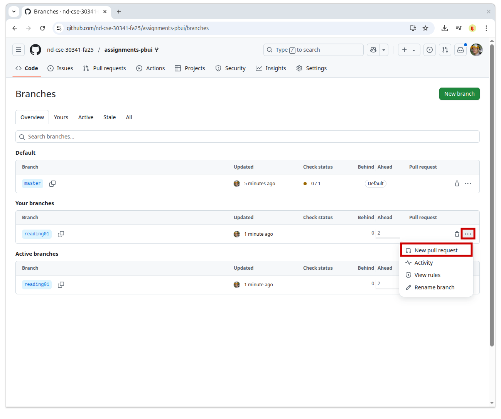
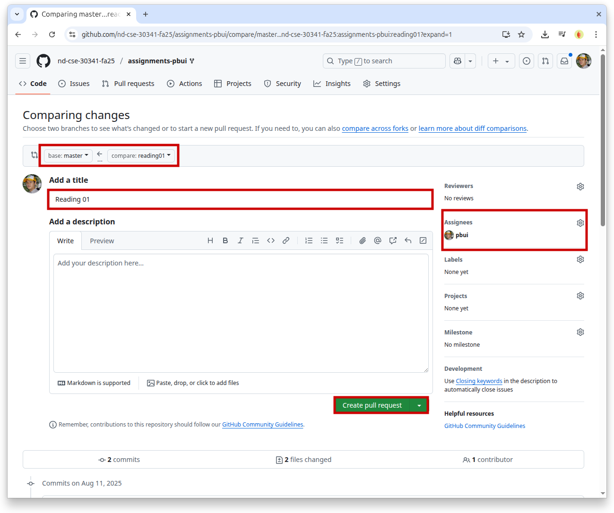
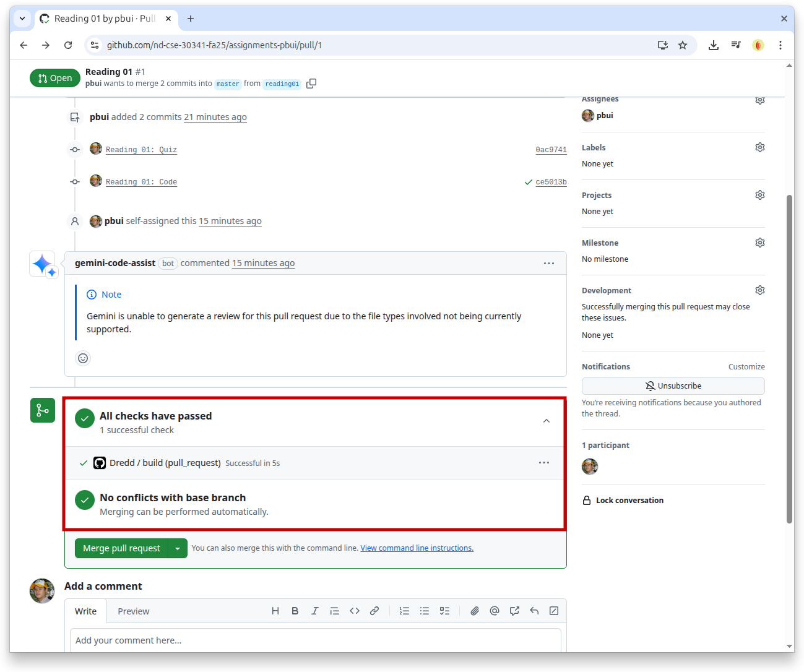
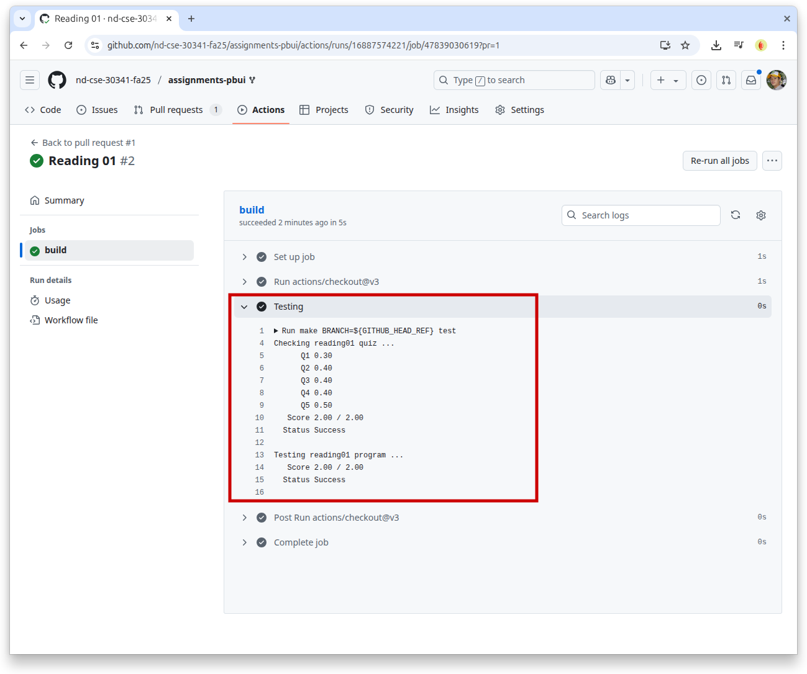

Everyone:
Welcome to CSE 30341 Operating System Principles, which (as the syllabus states) is a course that "introduces all aspects of modern operating systems", including topics such as "process structure and synchronization, interprocess communication, memory management, file systems, security, I/O, and distributed systems". What this means is that we will be exploring the key ideas behind operating systems such as Linux, Windows, and macOS and studying the underlying abstractions these systems provide to user applications.
TL;DR¶
For this week, you need to setup your GitHub repository, read about basic hardware and operating system concepts, and submit your responses to the Reading 01 Quiz.
Course Overview¶
Last year, most of you took the CSE 20289 Systems Programming course where you learned about how to use a Unix system and how to program applications in that environment. Throughout the course, you experienced and practiced the Unix Philosophy:
-
Write programs that do one thing and do it well.
-
Write programs to work together.
-
Write programs to handle text streams, because that is a universal interface.
You did this by writing shell scripts, Python applications, and utilities in C. You even wrote programs that utilized system calls such as open, fork, and socket! To organize and track your code, you used git and to automate building and testing, you used make.
In this class, we will take the next step and explore what data structures, algorithms, and mechanisms are necessary at the operating system level to support such applications. That is, we will discuss how the operating system kernel provides different abstractions that allow us to safely and efficiently execute multiple programs that communicate with each other while accessing different hardware resources. In short, we will uncover the magic that powers the Unix Philosophy.
For this course, we will focus on three main ideas:
-
Virtualization: How does the operating system represent the underlying hardware resources?
-
Concurrency: How does the operating system coordinate multiple streams of execution?
-
Persistence: How does the operating system organize and manage data?
To explore these topics and apply the concepts learned in class, you will implement four programming projects throughout the semester: implement a scheduling process queue, implement a message bus, implement malloc, and implement a filesystem. These projects will require some design work, extensive testing, and utilization of the skills you learned in both CSE 20289 Systems Programming and CSE 20312 Data Structures.
Additionally, you will have weekly reading assignments (the first one is below). These will automatically be graded by the continuous integration system provided by GitHub.
For both the programming projects and reading assignments, you will have to address the automatic code review provided by Google Gemini Code Assist as part of your homework submission.
Of course, there will be four exams to assess your mastery of the course material. Each exam will be on paper and will be "closed book", "closed notes", "closed computer", but "open mind".
Task 0: Python¶
Throughout the semester, we will be using Python 3 for a variety of
purposes. Because the student machines an older version of Python 3 by default,
you will need to add the following line to your ~/.bashrc file:
export PATH=/escnfs/home/pbui/pub/pkgsrc/bin:$PATH
You can then source this file to load that environment variable:
$ source ~/.bashrc
To check that Python 3 works, you can run the following:
$ python3 -V
Python 3.12.4
This will be necessary for the .scripts/check.py script in your
assignments repository.
Task 1: Slack¶
For communication outside of our meeting time, we will be using Slack,
specifically the #cse-30341-fa25 channel:
There is a class mailing list, but most day-to-day communication (including office hours and homework help) should take place on Slack.
Be aware of the following:
Task 2: GitHub¶
All of your work will be submitted to GitHub using git. Your third task is to setup your GitHub repository by doing the following:
-
Sign-in or create a GitHub account if you do not already have one.
-
Fork the class assignments repository from the following template:
This will create a private
assignments-$USERNAMErepository under your own account and linked to the nd-cse-30341-fa25 organization.Student Machines¶
As a reminder, students in this class have access to the following student machines:
student05.cse.nd.edu,student10.cse.nd.edu,student11.cse.nd.edu,student12.cse.nd.edu,student13.cse.nd.edu. -
Once this is done, you can clone your git repository to one of the student machines:
# Clone GitHub assignments repository to local machine $ git clone git@github.com:nd-cse-30341-fa25/assignments-$USERNAME.gitTo remotely access your repository from the command-line, you have two options:
-
Setup SSH Keys: With this method, you generate a local public and private key pair on your computer and then upload the public key to GitHub. When accessing GitHub from the command-line, you will use the private key to authenticate to the server.
This is the recommended way to setup your repository as it will allow for passwordless access.
-
Setup a Personal Access Token: With this method, GitHub will generate an application specific passsword that you can use with HTTPS. As the PAT is a long string of characters, it is recommended that you use it in conjunction with a password manager or keyring.
Setup SSH Keys¶
Here is a quick tutorial on how to Setup SSH Keys on the student machines (if you have not already):
-
Generate SSH keys if you don't have them yet:
# Accept the defaults, don't make a password if you want to go passwordless $ ssh-keygen -
Copy the contents of
~/.ssh/id_rsa.pubto the SSH Keys section of your GitHub settings page:# Copy and paste the contents of this file into GitHub $ cat ~/.ssh/id_rsa.pub -
Edit/create
~/.ssh/configto use this key with GitHub:# Add the following to your config (replace $NETID with your netid) $ $EDITOR ~/.ssh/config Host github.com User git Hostname github.com PreferredAuthentications publickey IdentityFile /escnfs/home/$NETID/.ssh/id_rsa
Once this is done, you should be able to do git operations without a password. You will need to accept the host key the first time by typing in "yes".
-
GitHub Repository¶
You are responsible for ensuring that your GitHub assignments repository is in proper order, which means you have the correct settings and permissions set. Failure to properly configure your repository will adversely impact your grade.
Task 3: Reading¶
The readings for Tuesday, August 26 are:
Optional AI Conversation¶
Using Learn About from Google (or your preferred AI agent), have a conversation about the core operating system themes and the Linux boot process using the following prompts:
Explain the following core themes of an operating system: virtualization, concurrency, persistence.
Describe the typical boot process of a Linux system.
Provide a brief summary of the different types of operating systems used in computing.
Summarize the differences between a microkernel and a monolithic kernel and the historical importance of these approaches.
As you explore, feel free to dive into any suggested related questions.
Note: As this is the first week of class, don't worry if you don't get the readings done by Tuesday. Try to turn in the assignment by the end of the week.
Task 4: Quiz¶
Once you have done the Readings, answer the following Reading 01 Quiz questions:
Program¶
In addition to a dredd quiz, each reading will also have a short C
program associated with each assignment. For this week, you are to modify
program.c in reading01 to print out True or False for each of the
following statements:
-
Students cannot drop any readings.
-
There are six group projects in this course.
-
There are two in-class exams in this course.
-
Students are expected to attend class regularly and on-time.
-
There are no deadlines in this class.
-
Students are expected to be respectful of their fellow classmates and the instructional staff.
-
There is no video capture for this class.
-
The course textbook is free and available online.
-
Students may consult online references or copy from resources if properly cited.
-
Students may consult or copy from solutions found online or from other students.
-
Students may consult ChatGPT, Co-Pilot, or other AI-based tools for explaining concepts, debugging problems, or as a reference.
-
Students may generate solutions with ChatGPT, Co-Pilot, or other AI-based tools to do programming assignments.
Note: Simply print True or False for each question (each answer on
its own line with no trailing space).
To test your program.c, you should be able to use make:
$ make test-program
gcc -Wall -g -std=gnu99 -o program program.c
curl -sLO https://www3.nd.edu/~pbui/teaching/cse.30341.fa25/static/txt/reading01/test_program.sh
chmod +x test_program.sh
./test_program.sh
Checking reading01 program ...
Score 2.00 / 2.00
Status Success
Submission¶
To check your quiz answers, you will need create a answers.json or
answers.yaml file in the reading01 folder of your assignments
repository:
-
For this class, you must use a separate git branch for each assignment. This means that the work for each reading and challenge must be done in a separate branch. To create and checkout a new branch, you can do the following:
$ git switch master # Make sure we are in master branch $ git pull --rebase # Make sure we are up-to-date with GitHub repository $ git checkout -b reading01 # Create reading01 branch and check it outOnce you do the above, you should see the following output for the git-branch command:
$ git branch master * reading01The
*indicates that we are currently on thereading01branch.Note: Please update the
README.mdfile to include your name and NetID so it is straightforward to identify your account. -
You can either hand-write the
answersfile using your favorite text editor or you can use the online form to generate the JSON data.A hand-written
answers.yamlmay look like the following:q1: [telemetry] q2: - scalability - processor - mouse - keyboard q3: - functions - call - awesome - lame q4: - iOS - monitoring - iphones - NSA q5: [init, bios, kernel, bootloader, mbr]The equivalent
answers.jsongenerated using the online form may look like the following:{ "q1": "telemetry", "q2": [ "scalability", "processor", "mouse", "keyboard" ], "q3": [ "functions", "call", "awesome", "lame" ], "q4": [ "iOS", "monitoring", "iphones", "NSA" ], "q5": [ "init", "bios", "kernel", "bootloader", "mbr" ] }You may use either format. To determine which symbols correspond to which response, take a look at the Reading 01 Quiz file.
To check your answers, you can use the provided
.scripts/check.pyscript:$ cd reading01 # Go into reading01 folder $ $EDITOR answers.json # Edit your answers.json file $ ../.scripts/check.py # Check reading01 Checking reading01 quiz ... Q1 0.00 Q2 0.10 Q3 0.00 Q4 0.00 Q5 0.10 Score 0.20 / 2.00 Status FailureThis script will check your
reading01/answers.jsonfile to dredd, which is the automated grading system. dredd will take your answers and return to you a score as shown above. Each reading quiz is worth 2.0 points.Note: You may check your quiz answers as many times as you want as dredd does not keep track of who checks what or how many times something is checked. It simply returns a score.
To test both the quiz and the
program.c, you can simply type inmake:$ make Checking reading01 quiz ... Q1 0.30 Q2 0.40 Q3 0.40 Q4 0.40 Q5 0.50 Score 2.00 / 2.00 Status Success Checking reading01 program ... Score 2.00 / 2.00 Status Success -
Once you have your answers file and your
program.c, you need to add and commit each file, and push your commits to GitHub:$ git add answers.json # Add answers.json to staging area $ git commit -m "Reading 01: Quiz" # Commit quiz $ git add program.c # Add program.c to staging area $ git commit -m "Reading 01: Program" # Commit program $ git push -u origin reading01 # Push branch to GitHubNote: You may edit and commit changes to your branch as many times as you wish. Just make sure all of your work goes in the appropriate branch and then perform a
git pushwhen you are done. -
When you are ready for your final submission, you need to create a pull request via the GitHub interface:
-
First, go to your repository's Branches page and then press the New pull request button for the appropriate branch:
 -
Next, edit the pull request title to "Reading 01", assign the pull request to the teaching assistant assigned to you for the given week, write a comment if necessary, and then press the "Create pull request" button.
Note: Make sure the
basebranch is your assignments repository and not the class assignments repository. -
Finally, make sure all the checks have passed.
Note: Please do not merge your own pull request. This makes it more difficult for the graders to keep track of what needs to be graded.
Every commit on GitHub will automatically submit your quiz or code to dredd and the results of each run is displayed in the Checks tab of each commit as shown below:

-
Graders¶
Please refer to the Reading 01 TA List to determine who your grader is for this week.
Once you have made the pull request, the instructor or teaching assistant can verify your work and provide feedback via the discussion form inside the pull request. If necessary, you can update your submission by simply committing and pushing to the appropriate branch; the pull request will automatically be updated to match your latest work.
When all work is graded, the grader will merge your branch and close the pull request.